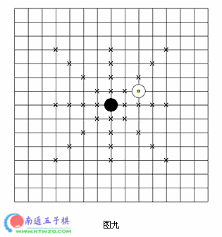
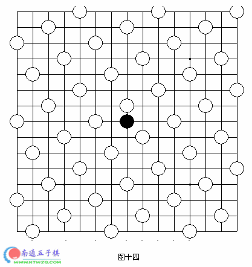
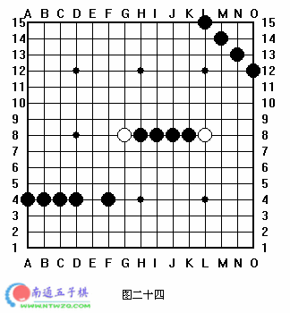

董氏五子棋入门讲座
#1 董氏五子棋入门讲座作者：有志青年 发表时间：2006-2-7 13:53:49
第一课点
狭隘地讲，五子棋的最终目的是要追求在某一条横线或者竖线或者斜线上形成并列五个子的形状（术语叫连五）。如图一中黑棋的形状或白棋的形状：
同时我们也明白：线是由点组成的。图一中黑棋或者白棋五子一连的形状是由五个点构成的。所以，我们的课就从点开始着手讲，慢慢带领大家进入五子棋这美妙的世界。
看图二，棋盘正中的点（术语叫“天元”）有一颗黑子，我们来看看利用上这点而形成连五的可能性共有多少种呢？一共是二十种，大家可以看一下图中X的部分（包括天元的黑子），也就是二十个连五所在的区域。并且从图中可以看到，这个区域是相当广的，一直延伸到棋盘上除天元以外的另外四个黑点（术语叫“星”），可见在五子棋中，一颗子所能辐射的范围是如此之大，势力范围是四颗星围成的整个区域。
我们再来看图三：这个点已经在四颗星构成的区域的边界了，我们来看看跟上面同样的一个问题：利用上这点而形成连五的可能性共有多少种呢？一共是十七种，少了3种。这说明图三中黑棋所在的点，形成五连的可能性要比图二种黑棋所在的点小一点。再看图四的点，这个点的位置是星，利用上这点而形成连五的可能性是十五种，又少了两种。
我们再来看两个极端一点的点。图五中的点位于边线，利用上这点而形成连五的可能性只有八种。图六中的点位于角上，利用上这点而形成连五的可能性只有三种
由此我们得出一个结论，一个跟围棋理论恰恰相反的结论：金肚银边草子角。在四颗星围成的区域内的点能最大程度发挥出点的效率，靠近边但远离角的区域其次，越靠近角的点效率越低，这是由于边线的限制造成的。
我们在棋盘上防两个子，一个黑子，一个白子。让我们看看当两个颜色相异的点同时存在于棋盘上时的情况。
在讲解这种情况前，先穿插一些五子棋的常识。五子棋跟围棋一样，是一种黑白棋。由对弈双方各执黑、白子，轮流落子，一方面尽量使自己先在某一条横线或者竖线或者斜线上形成并列五个子的形状，另一方面尽量阻挠对方形成同样的形状，使得自己先于对方形成五。阻挠的实现主要是通过：白子下过的点，黑棋不能重复落子；黑子下过的点，白子不能重复落子。这就使得我们可以通过落子来切断对方的棋形或者拦截对方的攻势。
知道这些以后，我们来看图七，一颗白子紧贴着黑子：
这颗白子做了什么？使得黑子形成连五的可能性由不存在白子时的二十种减少到十六种，势力范围也减少了将近1/4。同时，白子自己形成连五的可能性也不是二十种，而是十六种，势力范围也被黑子削弱了将近1/4（见图八）。这说明了什么呢？说明白子通过牺牲四种成为连五的可能性和将近1/4的势力范围，来减少了对方四种成为连五的可能性和将近1/4的势力范围。说明防守是要付出代价的。
来看图九：

图中的白子并没有减少黑子成为连五可能性的数量，但这颗白子存在于黑子的势力范围内，所以我们认为这颗白子对黑子的势力还是有所削弱的。黑子势力被削弱的事实将在黑棋棋局以下的进展中体现出来。
以下我们换种角度来讨论棋盘上的一个点。
请看图十和图十二：我们讨论图中的黑子，究竟需要多少颗白子的阻拦，才能使其成为五连的可能性为零呢？图十和图十一已经回答了这个问题，至少需要八个。
那么对于一个临近边线或者角落的子而言呢？请看图十二和图十三。分别只需要五颗子和四颗子就足够了。

这一切都归功于“第三者”，那就是边线。边线是中立的，当谁靠近它，它就对谁进行阻拦。
这一课的最后，我们来看一个有趣的棋形：

在图中，白棋所布下的天罗地网被称为“八卦阵”。在“八卦阵”中，黑棋无论如何都不可能形成连五。
#2 第二课点的延伸作者：有志青年 发表时间：2006-2-7 13:58:51
第二课点的延伸
点的延伸就是线，就是面。
看图十五和图十六，棋盘上的黑子增加为两个，图十五种两个黑子是列成形成二连（该种形状简称为“连”，包括斜的连二），图十六中两个黑子形成马步（简称为“桂”）。
我们同样使用第一课讲到的分析方法来分析两颗子的情况。
图十五中的两颗子一共可能形成三十四种连五。
图十六中的两颗子一共可能形成四十种连五（正好是一颗子成连五可能性的两倍）。
这里就出现一个问题：图十五中为什么会少几种呢？少的那几种去哪里了呢？
带着问题，我们再一步分析：我们认为在同样数量棋子的情况下，具有二的局面比没有二的局面要更有进攻性，所以我们认为图十五这两颗子所形成连五可能性的数量比图十六所形成连五可能性的数量少的那些子力已经转化为了进攻性。而图十六的两颗子比图十五的两颗子能形成连五的可能性更多，我们认为这些多出来的子力用在了拓展性上面。
另外，我们还可以观察到，图十五的两颗子仅形成了一条线，而图十六的两颗子已经架构出了一个面（虽然暂时有点虚）。
综上所述，图十五的二更具有进攻性，图十六的二更具有拓展性。
用另外一种方法进行分析，判断需要多少颗白子的阻拦，才能使其成为五连的可能性为零。
“连”和“桂”都需要10颗，如图十七的两颗子（简称“间”，包括横的和竖的类似棋型）也同样需要至少10颗白子的防守。但图十八的二却至少需要12颗白子，说明这两颗黑子组成的棋型用于拓展性的子力比用于进攻性的多很多。
图十九中，两颗黑子已经到了能成连五的极限，也就是两颗子“一层关联”的极限，需要13颗白子才能进行防守，所构成棋型的拓展性也达到了极限，距离再大的话我们就认为这两颗子“一层无关联”。“一层无关联”的两颗子是孤子，每颗子都需要8颗子的防守（见第一课），两颗子就至少需要2×8=16颗白子进行防守
但这里不得不说到一个特例，那也就是当两颗黑子位于连六两端时的棋型（白子无关）。在此之前我们所获得的知识范围内，我们认为图二十中的两颗黑子“一层无关联”，是两颗孤子，需要16颗白子进行防守。但由于五子棋的规则规定：六连不能算作赢棋，而是判为输棋（我们称这类规则规定禁止行棋的手段为“禁手”，连六或更长的棋型我们称为“长连禁手”）。因此，我们在观察图二十的时候发现，这两颗子只需要14颗白子的防守即可。另外一方面，这两颗子成五的可能性也比两个孤子少，减少的子力并没有转化为进攻性，总的子力减少了！。可见，黑子某些时候会自行损耗子力，这也就是当出现长连的情况。
我们继续看一个极端的例子，如图二十一：两颗子位于棋盘对角线的两端。我们认为这两颗子有关联吗？看棋盘，对于A1点的子而言，E5是“一层关联的极限”，I9是“二层关联”的极限，M13是“三层相关联”的极限。所以我们认为这两颗子是有关系的，但他们是“四层相关联”以上，太遥远了，在实际对局中，对于他们的关系，我们忽略不计。
课后问题：
- 请再摆出一种除图十五以外的“连”的棋形，也就是斜的“连”，并用课程中使用的方法分析其进攻性和拓展性。
- 请再摆出一种除图十七以外的“间”的棋形，也就是直的“间”，并用课程中使用的方法分析其进攻性和拓展性。
- 说出图十六中的两颗子是几层相关联的。
- 说出最长的长连有几个子组成。
#3 第三课逐步深入作者：有志青年 发表时间：2006-2-7 14:04:00
第三课逐步深入
本应延续上一课的话题，进一步讨论进攻性和拓展型。而这一课的内容，原本也应安排跟禁手一起讲，这样会使课程更加连贯。但我发现如果不事先阐述本课所涉及到的这些概念，就无法使我清楚地进行表达。因此，我只能以打乱读者的思绪为代价，穿插进本课的内容，以使大家在一个完整的教学系统中获益更多。
在本课的开始，我又必要提醒读者，我所阐述的一些概念和定义可能与您记忆中曾经认为的概念和定义不一致。通用的概念，例如：活三、跳三、冲四、活四、跳四等，更注重形式而非本质，当用来叙述概念的时候容易产生误导和混淆。所以我采用自己的一套概念进行讲解，而作为读者，最好暂时抛开原先的那些记忆，以免思路造成混乱。
首先，我们有必要了解“四”的性质，以便清楚地阐诉“三”的概念。“四”的性质会因为形状、位置以及对方棋子所处的位置的不同而不同。
所谓“四”，就是在连五范围内的四颗同色棋子组成的形状。
看图二十二，这是一个四：
当一个四，无论对方如何防守，都阻止不了其成为连五，这个四被称为“胜四”。图二十二中的四就是一个典型“胜四”的例子。
第二类“四”如图二十三：
图二十三中有五个“四”，它们具有共同的特征：如果轮到自己行棋，可以一手成“连五”，而如果轮到对方行棋，都有可能使其不能成为“连五”。比如对方防守在：A11、K12、J8、G4、O2。这类“四”我们称为：“活四”。
第三类“四”，如图二十四：

图二十四中有三个“四”，它们具有共同的特征：无论如何都不可能成为“连五”。我们称这类“四”为“死四”。
说完“四”的性质和类别，接下去来讲“三”的性质和类别。我们认为：凡是在连五范围内的三颗同色棋子，被称为“三”，如图二十五和图二十六中各有两个“三”的例子。“三”的性质会因为形状、位置以及对方棋子所处的位置的不同而不同
根据不同的“三”的不同性质，我们可以分为三类“三”：“活三”、“眠三”和“死三”。
图二十七和图二十八中有四个“三”，他们具有一个共同的特征：
如果下一手轮到自己行棋，就有可能成为“胜四”。这类“三”我们称为：“活三”。
图二十九和图三十中有四个“三”，他们具有一个共同的特征：
如果下一手轮到自己行棋，就有可能成为“活四”，而不可能成为“胜四”。这类“三”我们称为：“眠三”。
来看最后一类“三”，如图三十一：
图三十一中有两个“三”，它们具有一个共同的特征：无论如何都不可能成为“连五”。这类“三”，我们称为：“死三”。
本课的内容到此结束，所涉及的内容非常重要。以后阐述“禁手”概念以及分析进攻和拓展都要以本课提到的概念为基础。
课后作业：
1．在棋盘上摆出：活四、死四、胜四、活三、眠三、四三的棋形各若干种。
#4 第四课 进攻性与拓展性作者：有志青年 发表时间：2006-2-7 14:11:33
第四课 进攻性与拓展性
进攻与拓展是五子棋永恒的主题，五子棋能存在多久，关于他们的讨论就有多久。我可以预言，无论规则怎么改变，这里的理论都是适用的。
直接进入正题，看图三十二和图三十三：
图三十二中黑子的三颗子，需要多少颗白子的阻拦，才能使其成为五连的可能性为零呢？至少需要12颗。再看图三十三，黑子增加了一颗，但白子的阻拦仍然只需要12颗。这说明了什么问题呢？从前面的知识我们了解到，图三十三中多出来的那颗子，拓展性几乎为零，它的子力全都用在了进攻性上面。
再看图三十四，同样是增加了一颗子：
但如图三十五所反映的，现在至少需要13颗白子才能使其无法成五。这也就意味着图三十四的结构比图三十三的结构更具有拓展性。
在接下来的课程中，我们引入一种新的方法来判断进攻性和拓展性。
首先，我们要理解以下概念，以及棋谱中各个标记的含义：
- 直接进攻点：指能形成“活三”的点，在本课的棋谱中，我们用“A”表示。
- 间接进攻点：指能形成“眠三”的点在本课的棋谱中，我们用“B”表示。
- 一层相关联交点集：指某颗棋子的“一层关联”范围同另外一颗同色棋子的“一层关联”范围的交集，在本课的棋谱中，我们用“X”表示。
- 一层相关联交点：两颗子的一层相关联交点集中的某个点。
理解了这些概念以后，我们可以进行分析了。首先看图三十六：
如图：这两颗子组成的形状具有4个“直接进攻点”、2个“间接进攻点”以及4个“一层相关联交点”。
再看图三十七：
如图：这是一个“斜二”，它具有4个“直接进攻点”、2个“间接进攻点”以及6个“一层相关联交点”。比图三十六中的二多了2个“一层相关联交点”。
再看当存在一颗对方棋子时的情况，如图三十八：
该图的比图三十六多了一颗白子。情况就完全不一样了，分析一下现在的情况：它具有0个“直接进攻点”、3个“间接进攻点”以及4个“一层相关联交点”。由于对方的阻拦，发生的变化是：“直接进攻点”没了，多了一个“间接进攻点”。
请看图三十九，这张图表反映了进攻性和拓展性比较的方法：
从图中我们看到，当“一层相关联交点”相对较多的时候，拓展性就强，而当“直接进攻点”相对较多的时候，拓展性就强。
再看几个典型的例子：如图四十：
图四十中的“二”，没有“直接进攻点”和“间接进攻点”，但有10个“一层相关联交点”。说明该棋型目前不具有进攻性，但有很强拓展性。
如图四十一：
这两颗子只有3个“间接进攻点”和2个“一层相关联交点”，说明其进攻性和拓展性都比较弱。您可能会问：在第一课分析拓展性的时候，我们不是认为这个棋型具有很强的拓展性吗？那是因为第一课的分析我们同时包括了对两颗独立子的分析，而现在仅仅是针对两颗子的情况进行分析。
本课到此结束。
#5 Re:董氏五子棋入门讲座作者：快乐英雄 发表时间：2006-2-20 7:02:32
谢谢老师讲课,认真学习,好好学习^_^#6 Re:董氏五子棋入门讲座作者：无忌 发表时间：2006-3-3 11:25:41
好啊，说的对，我喜欢，老师我好崇拜啊，呵呵
#7 Re:董氏五子棋入门讲座作者：1 发表时间：2006-3-5 21:55:44
好文章
#8 Re:董氏五子棋入门讲座作者：沙漠绿风 发表时间：2006-3-7 10:22:18
谢谢，非常受益！
什么时候再来个初级讲座
#9 Re:董氏五子棋入门讲座作者：雁儿 发表时间：2006-3-7 20:12:17
顶，什么时候还能看到中级篇#10 Re:董氏五子棋入门讲座作者：newhua 发表时间：2006-3-15 17:09:58
好呀，真是厉害，不知道在那里可以看到全部~~~#11 Re:董氏五子棋入门讲座作者：gerbo 发表时间：2007-3-9 17:07:48
难得的文章，强调理论基础，对于初级棋手来说是不错的入门知识~好~！
#12 Re:董氏五子棋入门讲座作者：希望成为高手 发表时间：2007-4-7 0:13:24
好啊 支持 谢谢老师#13 Re:董氏五子棋入门讲座作者：海天涯 发表时间：2007-4-7 11:24:41
厉害厉害！！
#14 Re:董氏五子棋入门讲座作者：笑三笑 发表时间：2007-6-10 18:26:05
收获不少，谢谢
#15 Re:董氏五子棋入门讲座作者：爱 发表时间：2007-6-26 2:25:35
垃圾
#16 Re:董氏五子棋入门讲座作者：目光 发表时间：2007-6-29 7:29:26
有启发#17 Re:董氏五子棋入门讲座作者：四方游客 发表时间：2007-7-19 23:37:26
可以把全部内容整理合并提供下载吗#18 Re:董氏五子棋入门讲座作者：5子~学遥 发表时间：2007-8-7 18:24:05
真是好啊 !! 谢谢了!
#19 Re:董氏五子棋入门讲座作者：来客沙丝 发表时间：2009-3-23 19:40:12
好极了，还有其他教程吗？我再找找看。